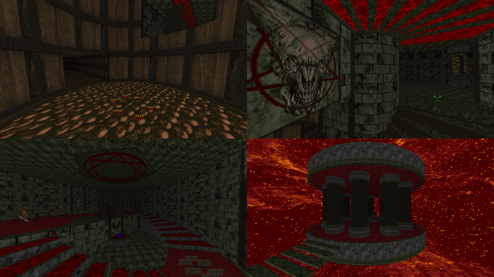

| Year | 2020 |
| IWAD | doom2.wad |
| Source port | GZDoom |
| Game mode(s) | Single-player, Coop (partial), DM (partial) |
| Map(s) contributed | MAP05 |
| Other contributions | INTER* maps, MAPINFO, misc. ACS scripting |
A Piece of Hell was a Doom mapping project hosted by InfernalMonsoon and myself over at the Piece of Pie Software community’s Discord server. Mappers interested in participating were given a month to make up to 3 maps each, and the project ended up gathering a modest 5 maps.
My contribution to the project is the final map, “Bob Prime”. (Half of the name is a reference to a recurring thing in Piece of Pie Software’s videos.) As GZDoom was the target port from the get-go, I wanted to utilize its feature set to create interesting architecture, as well as gameplay scenarios that wouldn’t be possible in any other engine. The limitations of the Hexen format were a minor hurdle after experiencing UDMF and the amount of control it provides, but I did manage to overcome them eventually.
“Bob Prime” is a mostly linear shot from the opening area to the final boss. Along the way, you’ll come across enemy encounters of varying intensity in a nearly endless stream, as is befitting of a final map. So as to break up the otherwise repetitive gameplay, the map features a “platforming” section with rockets falling from the ceiling that you have to avoid, lest you get blown up. The final boss isn’t quite as straightforward as shooting at it until it dies either.
In addition to contributing a map to the set, I was in charge of gathering up the maps and compiling the final product, as well as writing the MAPINFO. I also did miscellaneous ACS scripting in some of the other maps and the intermission text screens as per the story written by InfernalMonsoon.